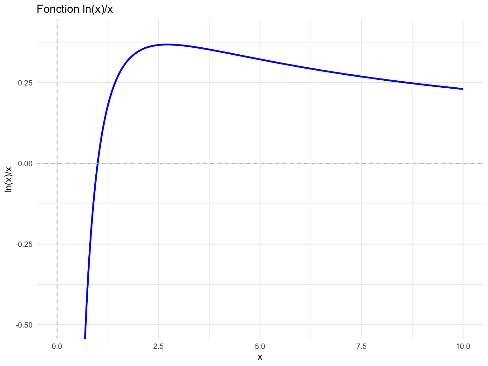

Vérifiez que \((x,y)=(2,4)\) et \((x,y)=(4,2)\) sont des solutions de cette équation.
Solution. Il suffit de remplacer et constater.
En étudiant le graphique de la fonction \(\dfrac{\log(x)}{x}\), montrez que les solutions énumérées en (a) sont les seules solutions telles que \(x\) et \(y\) soient des nombres naturels.
Solution. Voici le graphique de la fonction, que vous pouvez obtenir en faisant une analyse des dérivées première et seconde.
Code
library(ggplot2)# Création des donnéesx <-seq(0.1, 10, length.out =1000)y <-log(x)/x# Création du graphiqueggplot(data.frame(x = x, y = y), aes(x = x, y = y)) +geom_line(color ="blue", size =1) +labs(title ="Fonction ln(x)/x",x ="x",y ="ln(x)/x") +theme_minimal() +geom_hline(yintercept =0, linetype ="dashed", color ="gray") +geom_vline(xintercept =0, linetype ="dashed", color ="gray") +coord_cartesian(ylim =c(-0.5, 0.4))

On constate que l’égalité \(x^y=y^x\) est équivalente à l’égalité \(\frac{\log(x)}{x}=\frac{\log(y)}{y}\). Ainsi, Comme la fonction est strictement décroissante à partir de \(x=e\), il faut qu’une des valeurs se trouve avant \(e\) et une autre après \(e\). La seule possibilité pour une valeur entière avant \(e\) est \(2\), ce qui correspond à la solution trouvée en (a).
Étudiez le graphique de la fonction considérée en (b) pour déterminer lequel des nombres, parmi \(e^{\pi}\) et \(\pi^e\), est le plus grand.
Solution. On constate que l’inégalité \(x^y<y^x\) se traduit par \(\frac{\log(x)}{x}<\frac{\log(y)}{y}\), car la fonction \(\log\) est croissante. Comme la fonction \(\frac{\log(y)}{y}\) atteint son maximum en \(y=e\), il suit que \(\frac{\log(e)}{e}>\frac{\log(x)}{x}\) pour tout autre valeur de \(x\). Ainsi, \(\pi^e<e^{\pi}\).
Question 3
Soit \(f\) une fonction vérifiant \(f(x)=f'(x)\)\(\forall x\in\mathbb{R}\). Si \(f\) vérifie \(f(0)=1\), montrez que \(f\) est unique.
Solution. \(f(x)=f'(x)\Rightarrow f(x)-f'(x)=0\). En multipliant de chaque côté par \(e^{-x}\), on obtient que \(e^{-x}f(x)+f'(x)(-e^{-x})=0\). Or, le membre de gauche de cette équation correspond à la dérivée de la fonction \(-e^{-x}\cdot f(x)\) (appliquez la règle de dérivation d’un produit pour vous en convaincre). Puisque la dérivée de la fonction \(-e^{-x}f(x)\) est nulle, il existe une constante \(C\in\mathbb{R}\) telle que \(-e^{-x}f(x)=C\). En multipliant chaque membre par \(-e^x\), on déduit que \(f(x)=-Ce^x\). En imposant la condition \(f(0)=1\), on déduit que \(C=-1\), d’où \(f(x)=e^x\). Ainsi, il n’y a qu’une fonction satisfaisant simultanément les conditions \(f(x)=f'(x)\)\(\forall x\in\mathbb{R}\) et \(f(0)=1\), à savoir la fonction exponentielle de base \(e\).
Question 4
Soit \(f\) une fonction définie sur \(\mathbb{R}\) vérifiant \[f(x+y)=f(x)\cdot f(y)~\forall x,y\in\mathbb{R}\] Montrez que si \(f\) n’est pas identiquement nulle, alors \(f(0)=1\).
Solution. En posant \(x=y=0\) dans l’équation, on trouve que \(f(0)=f(0)^2\). De là nous concluons que \(f(0)=0\) ou \(f(0)=1\). Supposons maintenant que \(f(0)=0\). En posant \(y=0\) dans l’équation de départ, nous obtenons que \(f(x)=f(x)\cdot 0=0~\forall x\in\mathbb{R}\). Cela signifie que \(f\) est identiquement nulle. Donc si \(f\) n’est pas identiquement nulle, nous ne pouvons pas avoir \(f(0)=0\). Cela implique, par le travail fait précédemment, que \(f(0)=1\).
Question 5
La fonction \(f(x)=e^x\) est dérivable sur \(\mathbb{R}\), vérifie \(f(x+y)=f(x)\cdot f(y)\)\(\forall x,y\in\mathbb{R}\), et elle satisfait aussi \(f'(x)=f'(0)\cdot f(x).\) Trouvez une autre fonction satisfaisant ces propriétés.
Solution. On peut penser à la fonction \(f(x)=\exp(2x)\).
Question 6
On place un capital \(C_0\) à un taux d’intérêt annuel de \(i%\). Quelle sera la valeur de ce placement après \(n\) années si les intérêts sont versés annuellement?
Solution. Méthode 1: Notons \(C_n\) le capital après \(n\) années. Nous avons, pour \(n\geq 1\), que \[C_n=C_{n-1}+i\cdot C_{n-1}=C_{n-1}(1+i)\] En exprimant \(C_{n-1}\) en fonction de \(C_{n-2}\), puis \(C_{n-2}\) en fonction de \(C_{n-3}\), et ainsi de suite, nous arrivons à exprimer \(C_n\) en fonction de \(C_0\) (et \(i\)) par \(C_n=C_0(1+i)^n\).
Méthode 2: Notons \(C_n\) le capital après \(n\) années. Après une année, on ajoute au capital initial un montant d’argent correspondant à \(i\) fois le capital initial. Ainsi, \(C_1=C_0+i\cdot C_0=C_0(1+i).\) Pour calculer \(C_2\), on n’a qu’à considérer que le nouveau capital initial est de \(C_1\). On déduit que \(C_2=C_1(1+i)\). En remplaçant \(C_1\) par \(C_0(1+i)\), on déduit que \(C_2=C_0(1+i)^2\). On répète pour le calcul de \(C_3\), en constatant que d’une année à l’autre, on multiplie toujours le capital de l’année précédente par \(1+i\). Ainsi, après \(n\) années on aura multiplié \(n\) fois le capital initial par \(1+i\), ce qui signifie que \(C_n=C_0(1+i)^n.\)
Question 7
On place un capital \(C_0\) à un taux d’intérêt annuel de \(i%\). Quelle sera la valeur de ce placement après \(n\) années si les intérêts sont versés 52 fois par année à intervalles réguliers?
Solution. Un versement d’intérêt consiste à payer \(\frac{i}{52}\) du capital au début de la période correspondante. Ainsi, après un versement, le capital est de \(C_0+\frac{i}{52}\cdot C_0=C_0(1+\frac{i}{52})\). Comme c’était le cas dans l’exemple précédent, après chaque versement, on se trouve à avoir un capital correspondant à celui de la semaine précédente, multiplié par \(1+\frac{i}{52}\). Puisqu’il y a 52 versements d’intérêts dans une année, il y en aura \(52n\) dans \(n\) années. Ainsi, \[C_n=C_0\left(1+\frac{i}{52}\right)^{52n}.\]
Question 8
La population d’une culture bactérienne double à toutes les 15 minutes. Notons \(P_0\) la population au temps \(t=0\). Exprimez la population en fonction du temps où l’unité de temps choisie est l’heure. Donnez votre réponse sous la forme \[P(t)=Ae^{Bt},\] où \(A\) et \(B\) sont des constantes à déterminer.
Solution. \(P(t)=P_0e^{(4\ln 2)t}\) Si la population double (multipliée par 2) toutes les quinze minutes, elle quadruple (multipliée par 4) après 30 minutes, est multipliée par \(8\) après 45 minutes, et multipliée par 16 après une heure. Après \(t\) heures, la population initiale aura été multipliée \(t\) fois par \(16\), c’est-à-dire par \(16^t\). Ainsi, \(P(t)=P_0\cdot 16^{t}\). Pour respecter la forme de la réponse exigée, on doit exprimer \(16^{t}\) autrement. On observe que par définition, \(16^{t}=e^{t\log 16}\). Ainsi, \[P(t)=P_0e^{t\log 16}=P_0e^{4t\log 2}.\] Il y a donc différentes réponses possibles, notamment \(A=P_0, B=\log 16\) de même que \(A=P_0\) et \(B=4\log 2\).
Question 9
Pouvez-vous trouvez \(x\in\mathbb{N}\setminus\{1\}\) tel que \({\log_5 x,\log_7 x}\subset\mathbb{N}\)?
Solution. Impossible : cela voudrait dire qu’un nombre \(x\) est à la fois une puissance de \(5\) et une puissance de \(7\).
Question 10
Notre objectif dans ce numéro est de montrer que la suite \(u_n\) (pour \(n\geq 1\)) définie par \[u_n=\left(1+\frac{1}{n}\right)^n\] converge vers \(e\). Pour cet exercice, nous considérons que la définition du nombre \(e\) correspond à la valeur de la série \(\sum_{k=0}^{\infty}\frac{1}{k!}.\)
Utilisez le théorème du binôme pour montrer que \[\lim_{n\rightarrow\infty}u_n\leq e.\]
Montrez que pour tout \(m\in\mathbb{N}\), \[\lim_{n\rightarrow\infty}\prod_{k=0}^{m}\left(1-\frac{k}{n}\right)=1.\]
Utilisez la partie (b) et le théorème du binôme pour montrer que pour tout \(n\geq n_0\), \[\lim_{n\rightarrow\infty}u_n\geq\sum_{k=0}^{n_0}\frac{1}{k!}.\]
Conclure en faisant tendre \(n_0\) vers l’infini dans (c), puis en utilisant (a) et le théorème des deux gendarmes.
Solution. Cet exercice sera corrigé en classe.
Question 11
La question précédente suggère qu’il est possible de définir le nombre \(e\) de la manière suivante : \[e=\lim_{n\rightarrow\infty}\left(1+\frac{1}{n}\right)^n.\] En utilisant les propriétés de la fonction \(\ln\), de même que la règle de l’Hôpital, montrez que cette définition de \(e\) implique que \(\ln e=1\).
Solution. Cet exercice sera corrigé en classe.
Code source
---title: "Les fonctions exponentielles et logarithmiques"author: "Jérôme Soucy"jupyther: python3---## Question 1Résolvez les équations ci-dessous.#. $$\exp(e^{2x+1})=e^{\pi}$$ ::: solution $$x=\frac{-1+\log\pi}{2}$$ :::#. $$e^{3x}-e^{2x}-5e^x=0$$ ::: solution $$x=\log\left(1+\sqrt{21}\right)-\log 2=\log\frac{1+\sqrt{21}}{2}$$ :::## Question 2Considérons l'équation $x^y=y^x$.#. Vérifiez que $(x,y)=(2,4)$ et $(x,y)=(4,2)$ sont des solutions de cette équation. ::: solution Il suffit de remplacer et constater. :::#. En étudiant le graphique de la fonction $\dfrac{\log(x)}{x}$, montrez que les solutions énumérées en (a) sont les seules solutions telles que $x$ et $y$ soient des nombres naturels. ::: solution Voici le graphique de la fonction, que vous pouvez obtenir en faisant une analyse des dérivées première et seconde.```{r}#| warning: false#| fig-width: 8#| fig-height: 6library(ggplot2)# Création des données x <-seq(0.1, 10, length.out =1000) y <-log(x)/x# Création du graphiqueggplot(data.frame(x = x, y = y), aes(x = x, y = y)) +geom_line(color ="blue", size =1) +labs(title ="Fonction ln(x)/x",x ="x",y ="ln(x)/x") +theme_minimal() +geom_hline(yintercept =0, linetype ="dashed", color ="gray") +geom_vline(xintercept =0, linetype ="dashed", color ="gray") +coord_cartesian(ylim =c(-0.5, 0.4))``` On constate que l'égalité $x^y=y^x$ est équivalente à l'égalité $\frac{\log(x)}{x}=\frac{\log(y)}{y}$. Ainsi, Comme la fonction est strictement décroissante à partir de $x=e$, il faut qu'une des valeurs se trouve avant $e$ et une autre après $e$. La seule possibilité pour une valeur entière avant $e$ est $2$, ce qui correspond à la solution trouvée en (a). :::#. Étudiez le graphique de la fonction considérée en (b) pour déterminer lequel des nombres, parmi $e^{\pi}$ et $\pi^e$, est le plus grand. ::: solution On constate que l'inégalité $x^y<y^x$ se traduit par $\frac{\log(x)}{x}<\frac{\log(y)}{y}$, car la fonction $\log$ est croissante. Comme la fonction $\frac{\log(y)}{y}$ atteint son maximum en $y=e$, il suit que $\frac{\log(e)}{e}>\frac{\log(x)}{x}$ pour tout autre valeur de $x$. Ainsi, $\pi^e<e^{\pi}$. :::## Question 3Soit $f$ une fonction vérifiant $f(x)=f'(x)$ $\forall x\in\mathbb{R}$. Si $f$ vérifie $f(0)=1$, montrez que $f$ est unique.::: solution$f(x)=f'(x)\Rightarrow f(x)-f'(x)=0$. En multipliant de chaque côté par $e^{-x}$, on obtient que $e^{-x}f(x)+f'(x)(-e^{-x})=0$. Or, le membre de gauche de cette équation correspond à la dérivée de la fonction $-e^{-x}\cdot f(x)$ (appliquez la règle de dérivation d'un produit pour vous en convaincre). Puisque la dérivée de la fonction $-e^{-x}f(x)$ est nulle, il existe une constante $C\in\mathbb{R}$ telle que $-e^{-x}f(x)=C$. En multipliant chaque membre par $-e^x$, on déduit que $f(x)=-Ce^x$. En imposant la condition $f(0)=1$, on déduit que $C=-1$, d'où $f(x)=e^x$. Ainsi, il n'y a qu'une fonction satisfaisant simultanément les conditions $f(x)=f'(x)$ $\forall x\in\mathbb{R}$ et $f(0)=1$, à savoir la fonction exponentielle de base $e$.:::## Question 4Soit $f$ une fonction définie sur $\mathbb{R}$ vérifiant $$f(x+y)=f(x)\cdot f(y)~\forall x,y\in\mathbb{R}$$ Montrez que si $f$ n'est pas identiquement nulle, alors $f(0)=1$.::: solutionEn posant $x=y=0$ dans l'équation, on trouve que $f(0)=f(0)^2$. De là nous concluons que $f(0)=0$ ou $f(0)=1$. Supposons maintenant que $f(0)=0$. En posant $y=0$ dans l'équation de départ, nous obtenons que $f(x)=f(x)\cdot 0=0~\forall x\in\mathbb{R}$. Cela signifie que $f$ est identiquement nulle. Donc si $f$ n'est pas identiquement nulle, nous ne pouvons pas avoir $f(0)=0$. Cela implique, par le travail fait précédemment, que $f(0)=1$.:::## Question 5La fonction $f(x)=e^x$ est dérivable sur $\mathbb{R}$, vérifie $f(x+y)=f(x)\cdot f(y)$ $\forall x,y\in\mathbb{R}$, et elle satisfait aussi $f'(x)=f'(0)\cdot f(x).$ Trouvez une autre fonction satisfaisant ces propriétés.::: solutionOn peut penser à la fonction $f(x)=\exp(2x)$.:::## Question 6On place un capital $C_0$ à un taux d'intérêt annuel de $i%$. Quelle sera la valeur de ce placement après $n$ années si les intérêts sont versés annuellement?::: solution**Méthode 1**: Notons $C_n$ le capital après $n$ années. Nous avons, pour $n\geq 1$, que $$C_n=C_{n-1}+i\cdot C_{n-1}=C_{n-1}(1+i)$$ En exprimant $C_{n-1}$ en fonction de $C_{n-2}$, puis $C_{n-2}$ en fonction de $C_{n-3}$, et ainsi de suite, nous arrivons à exprimer $C_n$ en fonction de $C_0$ (et $i$) par $C_n=C_0(1+i)^n$.**Méthode 2**: Notons $C_n$ le capital après $n$ années. Après une année, on ajoute au capital initial un montant d'argent correspondant à $i$ fois le capital initial. Ainsi, $C_1=C_0+i\cdot C_0=C_0(1+i).$ Pour calculer $C_2$, on n'a qu'à considérer que le nouveau capital initial est de $C_1$. On déduit que $C_2=C_1(1+i)$. En remplaçant $C_1$ par $C_0(1+i)$, on déduit que $C_2=C_0(1+i)^2$. On répète pour le calcul de $C_3$, en constatant que d'une année à l'autre, on multiplie toujours le capital de l'année précédente par $1+i$. Ainsi, après $n$ années on aura multiplié $n$ fois le capital initial par $1+i$, ce qui signifie que $C_n=C_0(1+i)^n.$:::## Question 7On place un capital $C_0$ à un taux d'intérêt annuel de $i%$. Quelle sera la valeur de ce placement après $n$ années si les intérêts sont versés 52 fois par année à intervalles réguliers?::: solutionUn versement d'intérêt consiste à payer $\frac{i}{52}$ du capital au début de la période correspondante. Ainsi, après un versement, le capital est de $C_0+\frac{i}{52}\cdot C_0=C_0(1+\frac{i}{52})$. Comme c'était le cas dans l'exemple précédent, après chaque versement, on se trouve à avoir un capital correspondant à celui de la semaine précédente, multiplié par $1+\frac{i}{52}$. Puisqu'il y a 52 versements d'intérêts dans une année, il y en aura $52n$ dans $n$ années. Ainsi, $$C_n=C_0\left(1+\frac{i}{52}\right)^{52n}.$$:::## Question 8La population d'une culture bactérienne double à toutes les 15 minutes. Notons $P_0$ la population au temps $t=0$. Exprimez la population en fonction du temps où l'unité de temps choisie est l'heure. Donnez votre réponse sous la forme $$P(t)=Ae^{Bt},$$ où $A$ et $B$ sont des constantes à déterminer.::: solution$P(t)=P_0e^{(4\ln 2)t}$ Si la population double (multipliée par 2) toutes les quinze minutes, elle quadruple (multipliée par 4) après 30 minutes, est multipliée par $8$ après 45 minutes, et multipliée par 16 après une heure. Après $t$ heures, la population initiale aura été multipliée $t$ fois par $16$, c'est-à-dire par $16^t$. Ainsi, $P(t)=P_0\cdot 16^{t}$. Pour respecter la forme de la réponse exigée, on doit exprimer $16^{t}$ autrement. On observe que par définition, $16^{t}=e^{t\log 16}$. Ainsi, $$P(t)=P_0e^{t\log 16}=P_0e^{4t\log 2}.$$ Il y a donc différentes réponses possibles, notamment $A=P_0, B=\log 16$ de même que $A=P_0$ et $B=4\log 2$.:::## Question 9Pouvez-vous trouvez $x\in\mathbb{N}\setminus\{1\}$ tel que ${\log_5 x,\log_7 x}\subset\mathbb{N}$?::: solutionImpossible : cela voudrait dire qu'un nombre $x$ est à la fois une puissance de $5$ et une puissance de $7$.:::## Question 10Notre objectif dans ce numéro est de montrer que la suite $u_n$ (pour $n\geq 1$) définie par $$u_n=\left(1+\frac{1}{n}\right)^n$$ converge vers $e$. Pour cet exercice, nous considérons que la définition du nombre $e$ correspond à la valeur de la série $\sum_{k=0}^{\infty}\frac{1}{k!}.$#. Utilisez le théorème du binôme pour montrer que $$\lim_{n\rightarrow\infty}u_n\leq e.$$#. Montrez que pour tout $m\in\mathbb{N}$, $$\lim_{n\rightarrow\infty}\prod_{k=0}^{m}\left(1-\frac{k}{n}\right)=1.$$#. Utilisez la partie (b) et le théorème du binôme pour montrer que pour tout $n\geq n_0$, $$\lim_{n\rightarrow\infty}u_n\geq\sum_{k=0}^{n_0}\frac{1}{k!}.$$#. Conclure en faisant tendre $n_0$ vers l'infini dans (c), puis en utilisant (a) et le théorème des deux gendarmes.::: solutionCet exercice sera corrigé en classe.:::## Question 11La question précédente suggère qu'il est possible de définir le nombre $e$ de la manière suivante : $$e=\lim_{n\rightarrow\infty}\left(1+\frac{1}{n}\right)^n.$$ En utilisant les propriétés de la fonction $\ln$, de même que la règle de l'Hôpital, montrez que cette définition de $e$ implique que $\ln e=1$.::: solutionCet exercice sera corrigé en classe.:::